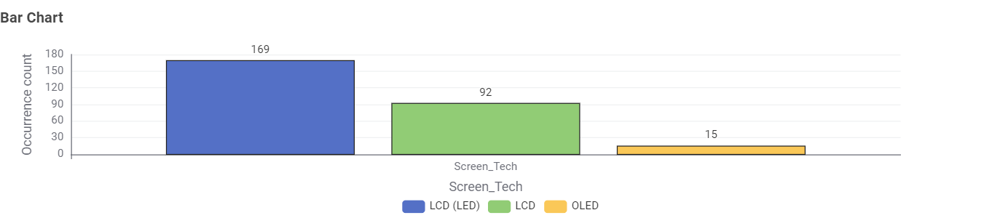
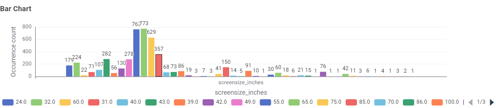
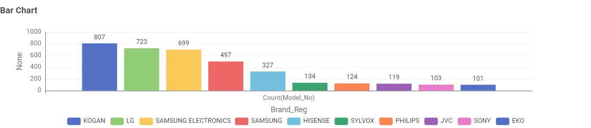
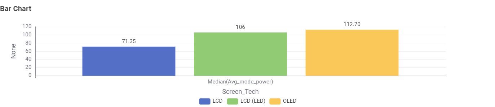
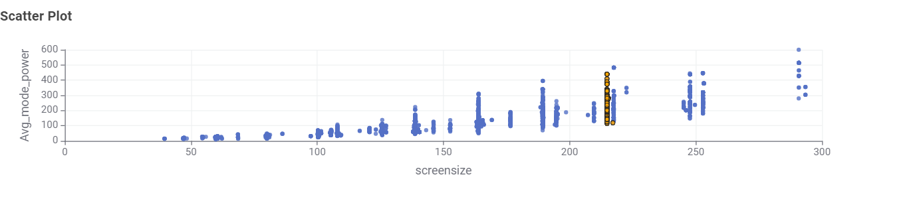
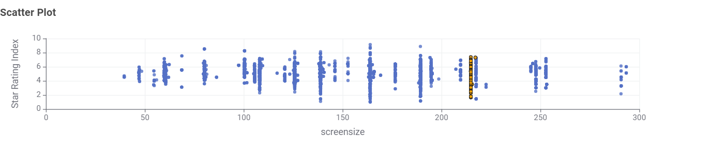
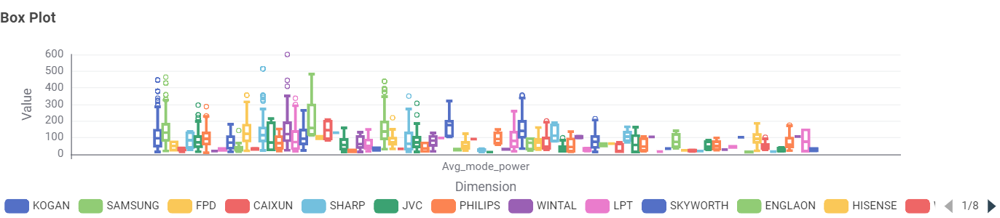

WattWatch AU is a small demonstration site exploring appliance energy
consumption in the Australian market. Placeholder figures below give
a sense of where household electricity actually goes.
30%of an average Australian household's electricity bill goes to appliances and electronics (illustrative figure)
Where the data will go
This site is the home base for data visualisations built across the unit. Placeholder cards below stand in for future charts.
TVs
Screen size and standby draw, broken down by category.
Fridges
Coming in a later task — annual kWh by star rating.
Heating
Coming in a later task — seasonal usage patterns.
Television energy consumption
Televisions are one of the most common entertainment appliances in
Australian homes. Power draw scales with screen size and panel
technology. Figures below are placeholder estimates for demonstration
purposes only.
Screen size
Panel type
Typical active power
Standby power
32"
LED
40 W
0.5 W
55"
LED
90 W
0.5 W
65"
OLED
150 W
1 W
75"
QLED
210 W
1 W
Placeholder data Figures above are approximate and for illustration only.
Data insights (KNIME)
The charts below were generated from the Australian Government's
Energy Rating dataset for televisions, cleaned and transformed in
KNIME. Click any chart to view it full size.

Bar chart 1 — [describe what this shows]Pie chart 1 — [describe what this shows]

Bar chart 2 — [describe what this shows]

Bar chart 3 — [describe what this shows]

Bar chart 4 — [describe what this shows]

Scatter plot 5 — [describe what this shows]

Scatter plot 6 — [describe what this shows]

Box plot 7 — [describe what this shows]
About this project
WattWatch AU is a student project built for COS30045 Data Visualisation
at Swinburne University, exploring appliance energy consumption trends
in the Australian market through interactive, web-based visualisations.
What this site is for
A refresher on HTML, CSS and JavaScript fundamentals.
Practice with GitHub commits and version control workflow.
A hosting base for visualisations built across later tasks.
Built by
[Your Name Here]
Generative AI acknowledgement
[State here whether you used GitHub Copilot or another GenAI tool, and
briefly what it helped with — e.g. scaffolding the nav script, styling
suggestions, etc. Full reflection notes live in README.md.]